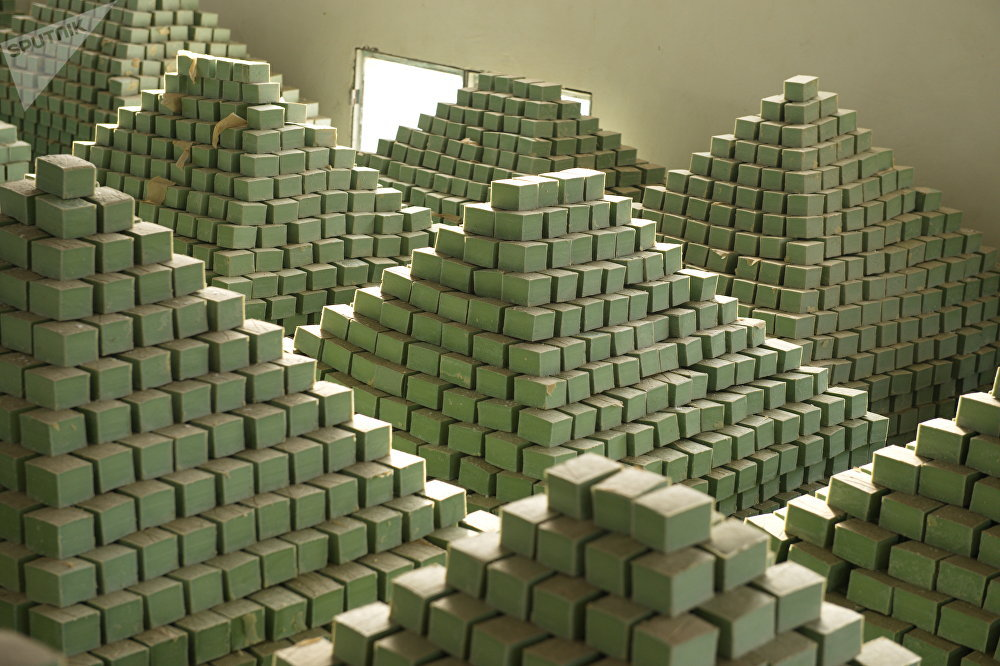
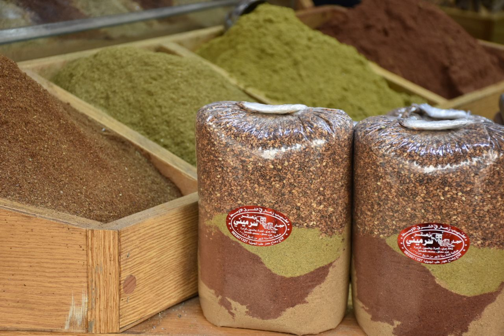
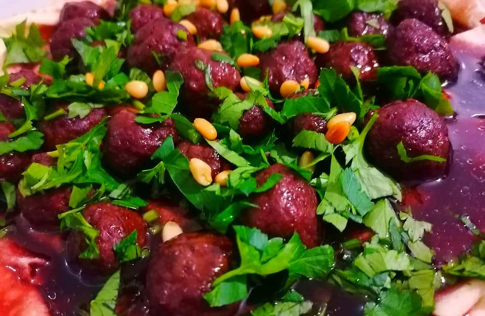

Kültürel Mirasımız
Halep ve Şam'ın tarih boyunca şekillendirdiği mimari, yemek ve zanaat kültürü; bize eşsiz bir miras bırakmıştır.

🏰 Halep Kalesi
Orta Doğu'nun en eski ve en görkemli kalelerinden biri olan Halep Kalesi, antik çağlardan Osmanlı dönemine kadar birçok medeniyete ev sahipliği yapmıştır. Şehrin sembolü olan bu yapı, mimarisi ve tarihi ile kültürel mirasın önemli bir parçasıdır.

🧼 Halep Sabunu
Zeytinyağı ve defne yağı ile yapılan geleneksel Halep sabunu, yüzyıllardır doğal temizlik ürünü olarak kullanılıyor. Katkı maddesi içermemesiyle dünyaca ünlü hale gelmiştir ve Halep’in el sanatlarının önemli bir örneğidir.

🌿 Halep Zaatarı
Halep'te üretilen baharat karışımı olan zaatar (zahter), kahvaltılarda ve yemeklerde sıkça kullanılır. Zeytinyağı ile birlikte tüketilen bu geleneksel tat, hem lezzetiyle hem de sağlık faydalarıyla bilinmektedir.

🍒 Lâhme Bi Kiraz
Kiraz ve kıymanın mükemmel uyumuyla hazırlanan bu eşsiz Şam yemeği, hem ekşi hem tatlı tadıyla damağa unutulmaz bir deneyim sunar. Genellikle özel günlerde yapılan bu yemek, geleneksel Suriye mutfağının incilerindendir.

🕌 Halep Ulu Camii
8. yüzyılda inşa edilen bu cami, Halep’in en eski ve en önemli dini yapılarındandır. Selçuklu ve Osmanlı dönemlerinde çeşitli restorasyonlar geçirmiştir. Taş işçiliği ve mimari sadeliğiyle dikkat çeker.

🛒 Halep Kapalı Çarşısı
Halep’in kalbinde yer alan bu tarihi kapalı çarşı, Ortadoğu’nun en eski ve en büyük çarşılarından biridir. Altın, gümüş, kumaş ve geleneksel kıyafetlerle dolu dükkanlarıyla ünlüdür. Ulu Cami ile Halep Kalesi arasında yer alan bu çarşı, yüzyıllardır şehrin ticaret ve zanaat merkezi olmuştur.